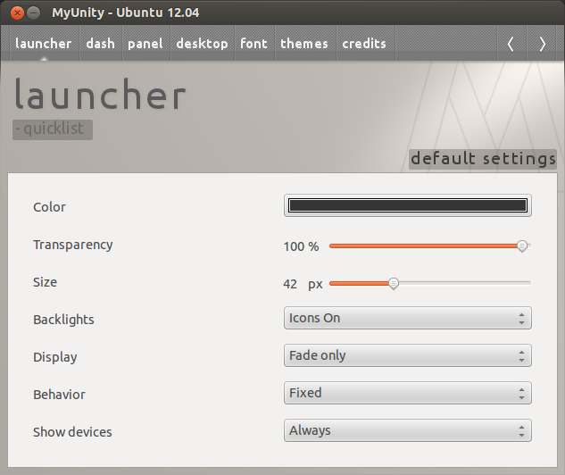
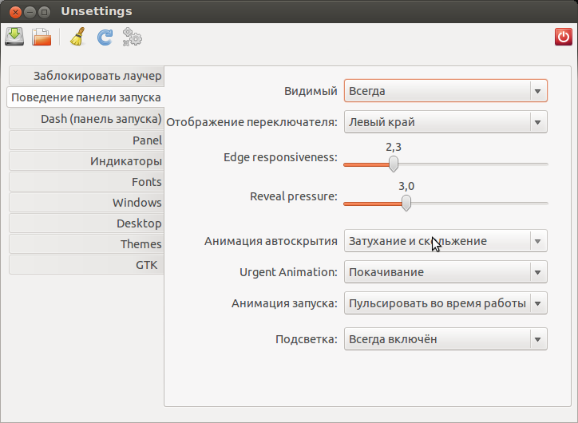
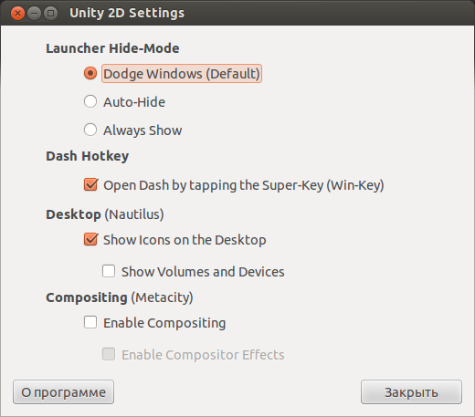

Установка :
sudo add-apt-repository ppa:myunity/ppa
sudo apt-get update
sudo apt-get install myunity

Установка :
sudo add-apt-repository ppa:diesch/testing
sudo apt-get update
sudo apt-get install unsettings
Вернуть автоматическое скрытие лаунчера в Precise Pangolin можно с помощью специального скрипта, который скрывает панель Unity, когда приложение развернуто на весь экран.
В начале нужно установить пакет unity-dodge-windows_1.0_all_ubuntovod.ru.deb :
Далее установить wmctrl:
sudo apt-get install wmctrl
После перезайти в Ubuntu или выполнить следующую команду:
unity-dodge-windows
Удаление :
sudo apt-get remove unity-dodge-windows

Установка :
sudo add-apt-repository ppa:krytarik/tuxgarage
sudo apt-get update
sudo apt-get install unity-2d-settings
Изменение размера значков в панели Unity 2D
Открыть и редактировать файл Shell.qml :
sudo gedit /usr/share/unity-2d/shell/Shell.qml
Значение width с 65 на 50 (ширина панели Unity)
Сохранить
Открыть файл IconTile.qml:
sudo gedit /usr/share/unity-2d/shell/common/IconTile.qml
Поменять значения длины и ширины значков на 32
SourceSize width 32
SourceSize height 32
Сохранить.
Открыть файл LauncherList.qm :
sudo gedit /usr/share/unity-2d/shell/launcher/LauncherList.qml
Меняем следующие значения: titlesize на 38 и selectionOutlineSize на 50
Сохранить .
Перезагрузка .
unity-dodge-windows когда-то устанавливал… потом снёс всё работает вроде как без косяков, но температура CPU (средння) отличалась от температуры до установки на 10-15 градусов… поэтому и снёс… грелся сильно
К сожалению, оболочка Unity 2D не имеет таких гибких возможностей для настройки внешнего вида, как стандартная Unity, вплоть до того, что даже нет возможности изменить размер панели с иконками для запуска приложений.
Но фанаты Ubuntu не сидят на месте, и вот, появился скрипт для Ubuntu 12.04 и именно с его помощью можно изменить размер панели.
Как изменить размер панели Unity 2D
Итак, для начала скачаем архив, в котором лежит нужный скрипт:
script.tar.gz (скачиваний: 429, размер: 829.0 B)
Распаковываем архив, получаем файл script.py. Зайдите в его свойства и поставьте галочку "Разрешить исполнение файла как программы":
Теперь введите в терминале следующую команду:
sudo ~/script.py 32
Где 32 - желаемый размер в пикселях.
После всех изменений нужно будет перезайти в сессию, что бы настройки вступили в силу.